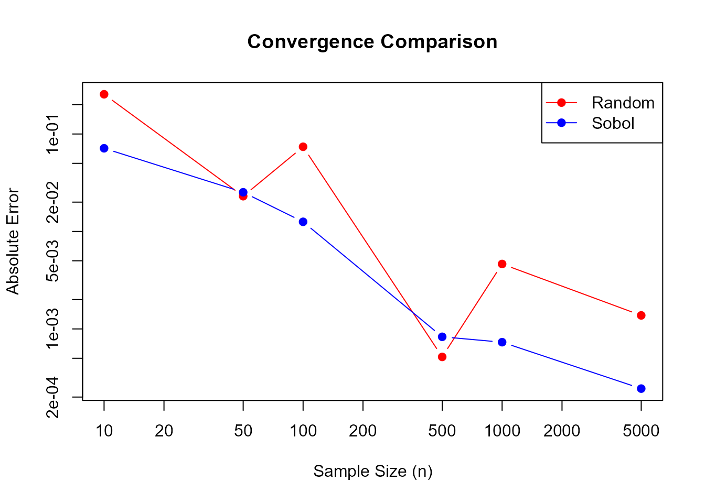

vignettes/sobol-sequences.Rmd
sobol-sequences.RmdThe sobol package provides a fast and efficient implementation of Sobol sequences for quasi-Monte Carlo (QMC) methods. Sobol sequences are low-discrepancy sequences that provide better coverage of the unit hypercube compared to pseudo-random numbers, making them valuable for numerical integration, sensitivity analysis, and simulation studies.
Sobol sequences were introduced by Ilya M. Sobol in 1967 as a method for generating quasi-random points with low discrepancy. The implementation in this package is based on:
Bratley, P., & Fox, B. L. (1988). “Algorithm 659: Implementing Sobol’s quasirandom sequence generator.” ACM Transactions on Mathematical Software, 14(1), 88-100. DOI: 10.1145/42288.214372
Joe, S., & Kuo, F. Y. (2008). “Constructing Sobol sequences with better two-dimensional projections.” SIAM Journal on Scientific Computing, 30(5), 2635-2654. DOI: 10.1145/1358628.1358630
The direction numbers used in this implementation come from Joe and Kuo’s work, which ensures good two-dimensional projections and Property A enforcement.
The package provides a simple interface for generating Sobol sequences. Let’s start with a basic example:
library(sobol)
# Create a 3-dimensional Sobol generator
gen <- sobol_generator(dimensions = 3)
# Generate a single point
point <- sobol_next(gen)
print(point)
#> [1] 0 0 0
# Generate multiple points
points <- sobol_next_n(gen, n = 5)
print(points)
#> [,1] [,2] [,3]
#> [1,] 0.500 0.500 0.500
#> [2,] 0.750 0.250 0.250
#> [3,] 0.250 0.750 0.750
#> [4,] 0.375 0.625 0.125
#> [5,] 0.875 0.125 0.625The package supports incremental point generation, which is useful for adaptive algorithms:
# Create a generator
gen <- sobol_generator(dimensions = 2)
# Generate points one at a time
for (i in 1:5) {
point <- sobol_next(gen)
cat("Point", i, ":", point, "\n")
}
#> Point 1 : 0 0
#> Point 2 : 0.5 0.5
#> Point 3 : 0.75 0.25
#> Point 4 : 0.25 0.75
#> Point 5 : 0.375 0.625
# Check current index
current_idx <- sobol_index(gen)
cat("Current index:", current_idx, "\n")
#> Current index: 5For reproducibility and parallel processing, you can skip to any point in the sequence:
# Create a generator starting from index 100
gen1 <- sobol_generator(dimensions = 2, skip = 100)
point1 <- sobol_next(gen1)
# Or skip to a specific index
gen2 <- sobol_generator(dimensions = 2)
sobol_skip_to(gen2, 100)
point2 <- sobol_next(gen2)
# These should be identical
print(all.equal(point1, point2))
#> [1] TRUEFor large-scale simulations, generate many points at once:
# Generate 1000 points at once
gen <- sobol_generator(dimensions = 2)
points <- sobol_next_n(gen, n = 1000)
# Visualize the coverage
plot(points[, 1], points[, 2],
pch = 20, cex = 0.5,
main = "Sobol Sequence Coverage (2D)",
xlab = "Dimension 1", ylab = "Dimension 2"
)One of the key advantages of Sobol sequences is their superior coverage of the sampling space:
# Generate Sobol points
gen <- sobol_generator(dimensions = 2)
sobol_points <- sobol_next_n(gen, n = 1000)
# Generate random points
random_points <- matrix(runif(2000), ncol = 2)
# Plot comparison
par(mfrow = c(1, 2))
plot(sobol_points[, 1], sobol_points[, 2],
pch = 20, cex = 0.5,
main = "Sobol Sequence (n=1000)",
xlab = "Dimension 1", ylab = "Dimension 2"
)
plot(random_points[, 1], random_points[, 2],
pch = 20, cex = 0.5,
main = "Random Sampling (n=1000)",
xlab = "Dimension 1", ylab = "Dimension 2"
)Notice how the Sobol sequence provides more uniform coverage without clustering.
Sobol sequences can significantly improve the accuracy of Monte Carlo integration:
# Function to integrate: f(x, y) = x^2 + y^2 over [0,1]^2
# True value: 2/3
true_value <- 2 / 3
# Monte Carlo integration using random sampling
mc_random <- function(n) {
points <- matrix(runif(2 * n), ncol = 2)
mean(points[, 1]^2 + points[, 2]^2)
}
# Quasi-Monte Carlo integration using Sobol sequences
qmc_sobol <- function(n) {
gen <- sobol_generator(dimensions = 2)
points <- sobol_next_n(gen, n = n)
mean(points[, 1]^2 + points[, 2]^2)
}
# Compare convergence
sample_sizes <- c(10, 50, 100, 500, 1000, 5000)
random_errors <- sapply(sample_sizes, function(n) abs(mc_random(n) - true_value))
sobol_errors <- sapply(sample_sizes, function(n) abs(qmc_sobol(n) - true_value))
# Plot convergence
plot(sample_sizes, random_errors,
type = "b", log = "xy",
col = "red", pch = 19,
main = "Convergence Comparison",
xlab = "Sample Size (n)", ylab = "Absolute Error",
ylim = range(c(random_errors, sobol_errors))
)
lines(sample_sizes, sobol_errors, type = "b", col = "blue", pch = 19)
legend("topright", c("Random", "Sobol"),
col = c("red", "blue"),
pch = 19, lty = 1
)
Sobol sequences maintain their good properties even in high dimensions:
# Generate points in 10 dimensions
gen_10d <- sobol_generator(dimensions = 10)
points_10d <- sobol_next_n(gen_10d, n = 1000)
# Check dimensions
cat("Generated", nrow(points_10d), "points in", ncol(points_10d), "dimensions\n")
#> Generated 1000 points in 10 dimensions
# Examine coverage in first two dimensions
plot(points_10d[, 1], points_10d[, 2],
pch = 20, cex = 0.5,
main = "10D Sobol Sequence (Projection to 2D)",
xlab = "Dimension 1", ylab = "Dimension 2"
)The package uses precomputed direction numbers for up to 1000 dimensions, providing significant performance improvements:
library(microbenchmark)
# Benchmark batch generation
microbenchmark(
n_100 = {
gen <- sobol_generator(dimensions = 10)
sobol_next_n(gen, 100)
},
n_1000 = {
gen <- sobol_generator(dimensions = 10)
sobol_next_n(gen, 1000)
},
n_10000 = {
gen <- sobol_generator(dimensions = 10)
sobol_next_n(gen, 10000)
},
times = 100
)You can use skip-ahead to generate different portions of the sequence in parallel:
library(parallel)
# Function to generate points from a specific range
generate_chunk <- function(start_idx, n, dims) {
gen <- sobol_generator(dimensions = dims, skip = start_idx)
sobol_next_n(gen, n = n)
}
# Generate 10,000 points in parallel chunks
cl <- makeCluster(4)
clusterEvalQ(cl, library(sobol))
chunks <- parLapply(cl, 0:3, function(i) {
generate_chunk(start_idx = i * 2500, n = 2500, dims = 5)
})
stopCluster(cl)
# Combine results
all_points <- do.call(rbind, chunks)
cat("Generated", nrow(all_points), "points in parallel\n")skip
parameter to ensure reproducible resultsSobol, I. M. (1967). “On the distribution of points in a cube and the approximate evaluation of integrals.” USSR Computational Mathematics and Mathematical Physics, 7(4), 86-112.
Bratley, P., & Fox, B. L. (1988). “Algorithm 659: Implementing Sobol’s quasirandom sequence generator.” ACM Transactions on Mathematical Software, 14(1), 88-100.
Joe, S., & Kuo, F. Y. (2008). “Constructing Sobol sequences with better two-dimensional projections.” SIAM Journal on Scientific Computing, 30(5), 2635-2654.
The sobol package provides a robust, efficient implementation of Sobol sequences suitable for a wide range of quasi-Monte Carlo applications. Its incremental generation and skip-ahead capabilities make it particularly useful for adaptive algorithms and parallel processing.
For more information, see the package documentation and visit the GitHub repository.